What's actually assigned to each song, today
Every one of the 46 cues, mapped to the real image behind it — not a mood board, an inventory. Anything not yet locked is marked plainly as not yet produced, rather than standing in on a borrowed image.
Everything here is screen content flanking a live performer on stage, not a movie shot. Every frame is dead-center, on-axis and symmetrical — no three-quarter angles, no Dutch tilt, no candid perspective. An off-axis composition reads as a video playing on a screen; a symmetrical one reads as content built for the space. This applies to every future styleframe from here forward.
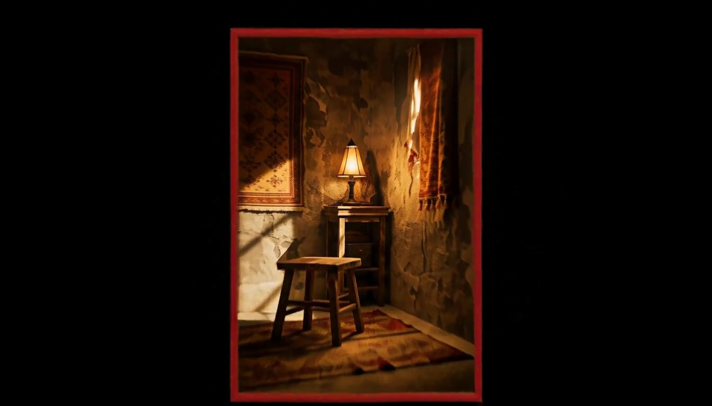
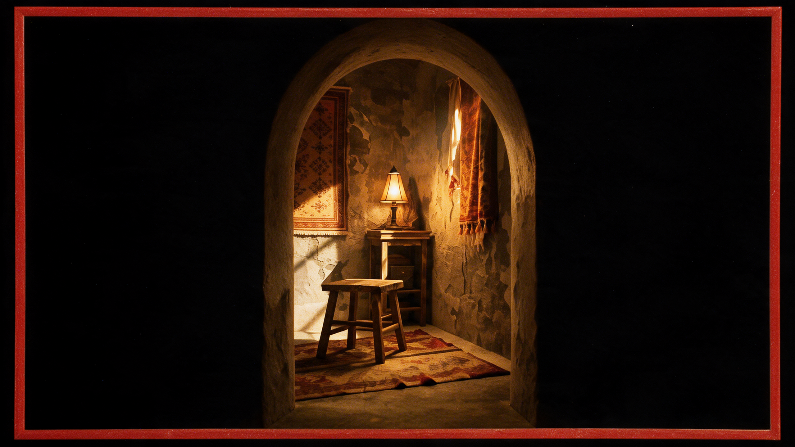
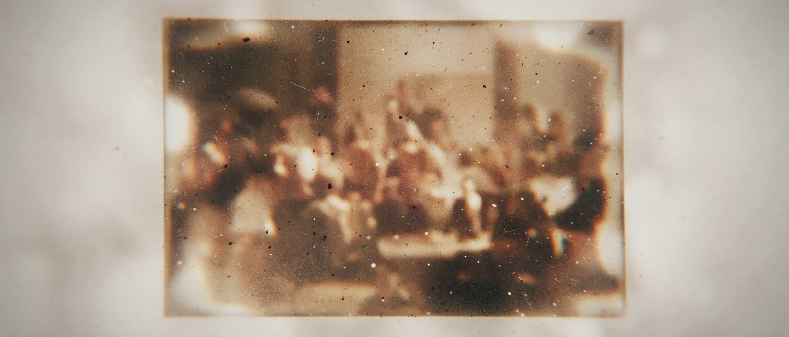
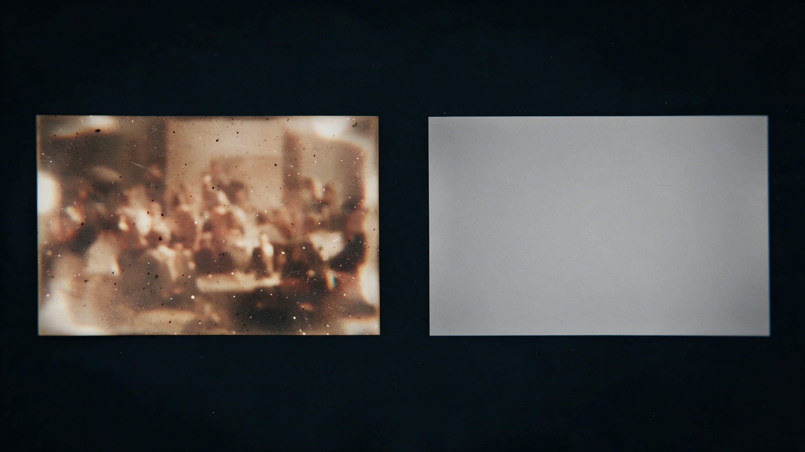
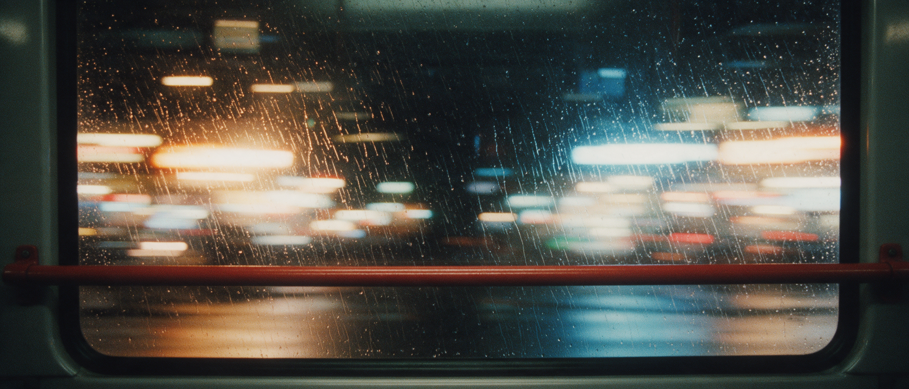
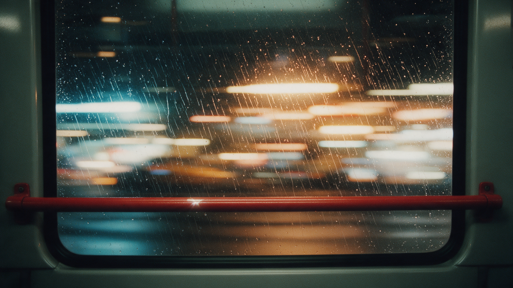
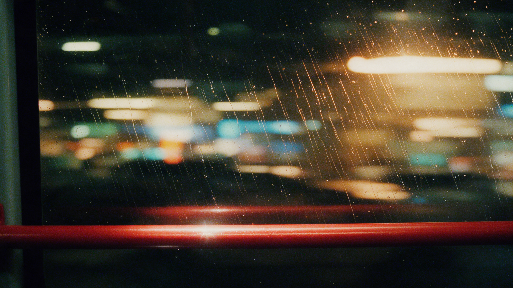
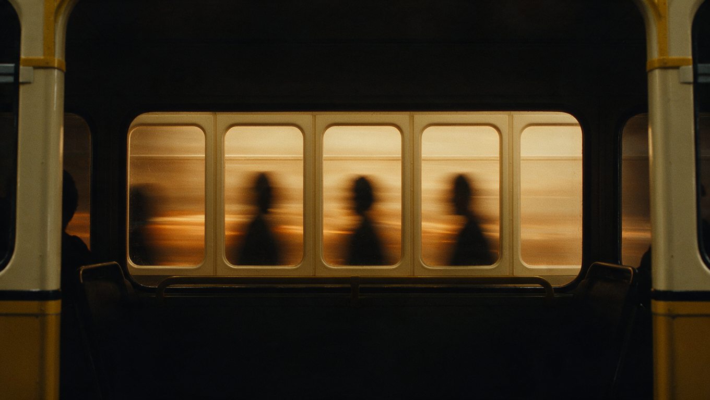
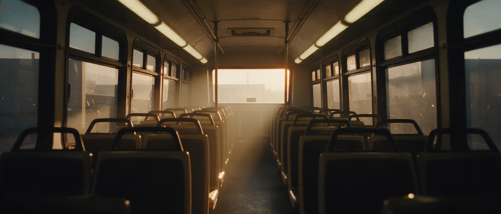
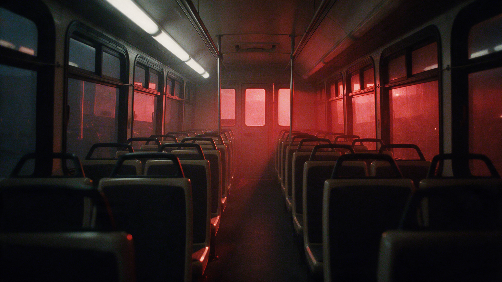
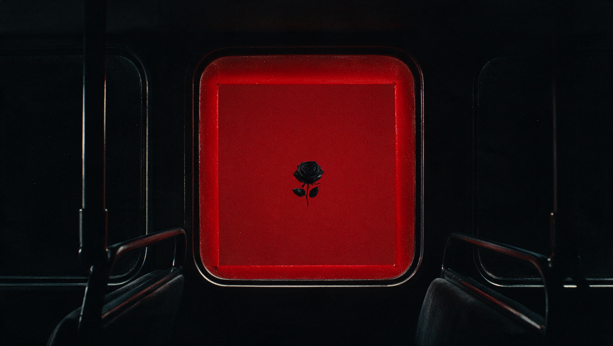
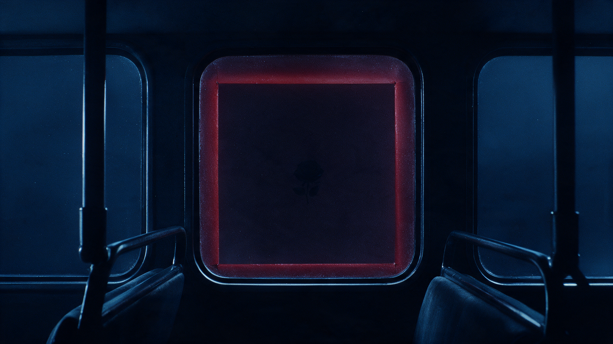
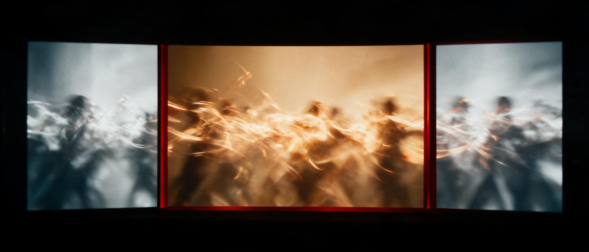
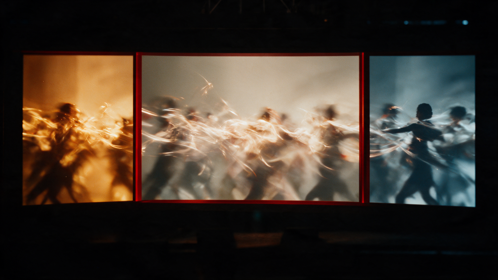
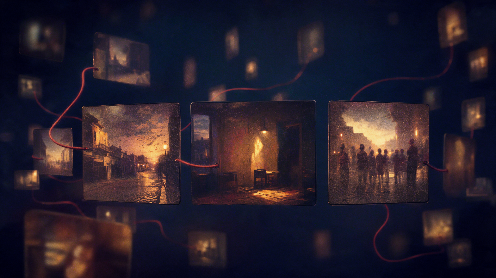
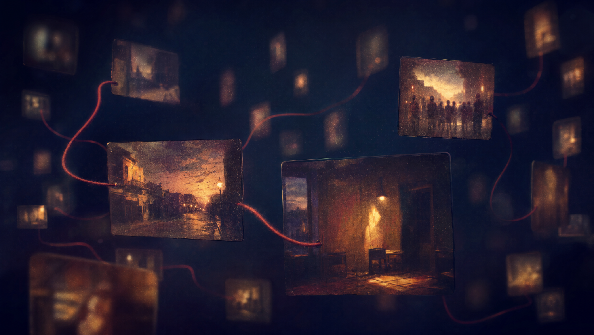
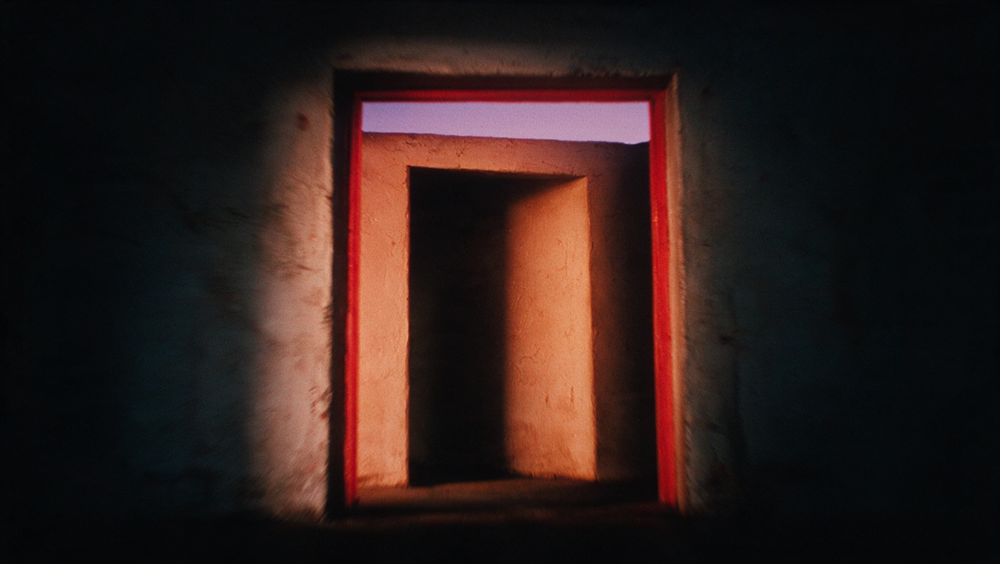
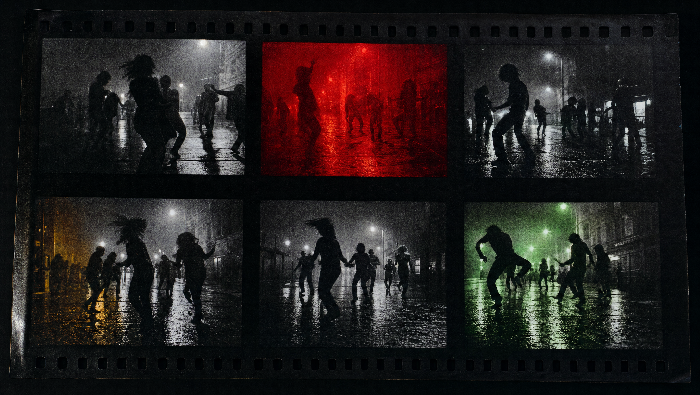
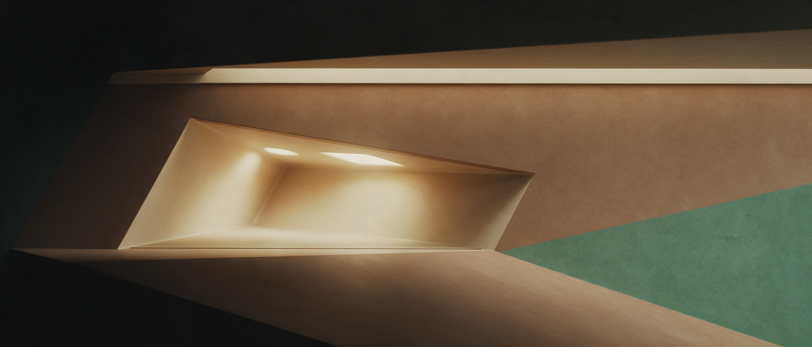
What's actually been made and liked
Sorted by what the images do, not by which song they were made for. Five families recur independently of title or era — these are the load-bearing ideas the restructured direction is built from.

One bright vertical crack in total black — the recurring opening/closing device, already established at both ends of the timeline.

The same crack, now dividing two colour temperatures — proof the device already carries an act-to-act palette shift.

A second, squarer variant of the same idea — a threshold rather than a crack. Same function, different geometry.

Something Else's rose motif, now inset inside the Lagos-to-London bus window — two eras occupying one frame at once.

The vehicle read as a row of frames, not an icon — passengers as silhouette, light doing the emotional work.

One action, three panels, three temperatures — growth as repetition, exactly as the brief asks for it.

The same idea as film stock — one strip, six regrades. A ready-made device for repeating a motif across acts.

Private memory made into a shared field — dozens of small tethered frames instead of one big scene.

The clearest existing image of the show's final idea — the private world resolving into a shared horizon.

Strong composition, wrong subject — the ocean horizon is a water body. Kept only as a record of what not to extend.
One film, four acts — mapped onto the show's own structure
Rather than treating each song as its own scenography, the direction uses the show script's existing four colour-coded sections as the film's own act breaks. The team already divided the night this way for lighting and blocking purposes; this direction reads that division as a story.
Where It Starts
1A INTRO → 1L SurrenderThe frame-grammar world is established from nothing: a single seam of light in black, then one red-edged frame holding one private image. No journey yet — only the place, and the image it leaves behind.
Carried
2A Bankulize (Acoustic) → 2N London TownOpens on the script's own blocking note for 2A — mid-stage, solo spot — read on screen as the show's only true solo frame: one small image in a vast dark field. From there the Lagos-to-London bus grammar fully arrives, its own window and handrail accumulating focus and warmth as the ride continues, and the act closes on a partial, dissolving exterior reveal.
Multiply
3A Nobody → 3N See What We've DoneThe single arrival frame fractures into a triptych, then a field of dozens of tethered frames — the private history becomes a shared one. Objects from Acts I and II reappear here only as one tile among many, never restaged at their original scale.
Everywhere
4A Short Skirt → 4H ExitThe mosaic resolves into a single wide arch; pyro peaks play against a corona/eclipse device already built for this purpose. The skyline behind the arch is the show's widest image — after which the frame narrows back down to the exact seam that opened Act I, now closing.
What actually holds 46 songs together
Three devices repeat across every act at different scale and colour. Naming them once here means no future styleframe has to reinvent how it connects to the one before it.
- The Seam
The vertical light-crack that opens Act I and closes Act IV. Every act inherits it in that act's colour — amber in Act I, split blue/amber in Act II, vermilion in Act III, full gold in Act IV. It is the only device that is allowed to touch every single track.
- The Thread
A thin red line that physically connects two frames on screen. It is how an object is shown being carried rather than cut to — the rose reaching the hat, the bus window reaching the Maison Rouge interior, one small frame reaching the next in the Act III constellation.
- Carried Objects
The bus, the rose-and-hat pair, the red interior. Each enters exactly once at full scale, in the act where its song lives, then only ever reappears afterward as one tile inside a larger field — never restaged as the main subject a second time.
All 46 cues, act by act
Anchor cues introduce or carry a defining motif forward. Connective cues hold or extend the current frame without adding a new object — this is the ambient majority of the show. This is a map of intent, not a finished shot list: per the brief's development method, each anchor gets its own three-frame styleframe pass (entry / transformation / exit) before production extends to the connective cues around it.
Every row also carries its link to the next cue — the specific thing that happens at the join so it never reads as two clips cut together. Every join in the show is one of six repeatable devices, reused across all four acts rather than invented fresh each time:
| ID | Title | Role | Motif | Visual intent | Link to next |
|---|---|---|---|---|---|
| 1A | Intro ▶ 1080p | Interlude | The Seam | Total black; the seam ignites and holds. Nothing crosses it yet. | The Seam DissolveSeam widens slightly, dissolving into the two vertical light pillars of 1B: Teef Teef. ▶ Play 1A → 1B Transition (26s) |
| 1A → 1B | TRANSITION (The Seam Dissolve) | 26s JOIN | The Seam Dissolve | Dissolves the origin seam into a red border contour, cleanly stitching Intro into Teef Teef. | ▶ Watch 1A → 1B Transition (26s) |
| 1B | Teef Teef ▶ 1080p | Connective | The Seam | The seam widens into one red-edged frame, still empty. | Light Pillar CorridorThe two light pillars multiply down an architectural corridor into Shitor. ▶ Play 1B → 1C Transition (13s) |
| 1B → 1C | TRANSITION (Light Pillar Corridor) | 13s JOIN | Light Pillar Corridor | The two vertical light pillars of 1B multiply and recede down an architectural light corridor into Shitor. | ▶ Watch 1B → 1C Transition (13s) |
| 1C | Shitor ▶ 1080p | Connective | Light Corridor | Symmetrical architectural corridor of light columns flanking a central seam. | Texture HoldSame corridor, cut speed only — no geometry change. |
| 1D | Anointing (short, sped) | Connective | Frame | Sped-up variant of the same held frame, cut to the edit. | Texture HoldTempo settles as the rose fades up in the same red ground. |
| 1E | Fefe Ne Fefe | Anchor | First object | A single rose on a red ground enters the frame — Something Else's premonition, held still. | Texture HoldRose dissolves as the ground shifts from red to plaster. |
| 1F | Tilapia | Connective | Frame | Ground shifts from red to weathered plaster; the object recedes to suggestion. | Edge RevealA second frame fades in at the first frame's right edge, matching scale. |
| 1G | Ohema | Connective | Frame | A second frame appears beside the first; neither touches yet. | Edge RevealA red thread fades in between the two static frames. |
| 1H | Hollup | Connective | The Thread | The two frames drift closer; a red thread begins to stretch between them. | Shape-MorphWhere the thread lands, that frame's content dissolves into a bus-window edge. |
| 1I | Dabebi ▶ 1080p | Anchor | Bus (seed) | The thread completes; through it, the first edge of a bus window appears — the journey seeded, not yet full scale. | Red Thread RevealThe horizontal red thread tracking across the bus window frame connects into the centered bus interior. ▶ Play 1I → 1J Transition (11s) |
| 1I → 1J | TRANSITION (Red Thread Reveal) | 11s JOIN | Red Thread Reveal | The horizontal red thread tracking across the bus window frame connects into the centered bus interior. | ▶ Watch 1I → 1J Transition (11s) |
| 1J | Bus Stop ▶ 1080p | Anchor | Bus × Maison Rouge | A red interior sliver appears behind the window edge — the two eras first touch. | Texture HoldComposition locked; plaster texture reasserts under both elements. |
| 1K | Property | Connective | Frame | Interior/exterior tension holds; weathered wall texture returns beneath both. | Reveal-Through-WidenBoth inner frames dissolve outward into the single seam shape that opened the act. |
| 1L | Surrender | Anchor · Act close | The Seam | The Act I seam returns at full width — a true threshold, unlit beyond it. Uncrossed. | Shape-MorphThe full-width seam narrows and desaturates into the solo spotlight that opens 2A. |
| ID | Title | Role | Motif | Visual intent | Link to next |
|---|---|---|---|---|---|
| 2A | Bankulize (Acoustic) | Interlude | Solo frame | Per the script's own blocking (stool, solo spot): one small still image in a vast dark field — the show's only true solo frame. | Reveal-Through-WidenRoom and stool hold; the frame's black border recedes outward. |
| 2B | She Loves Me | Connective | Solo frame | The lone frame begins to widen back toward the edges of the canvas. | Edge RevealA second, cooler archive frame fades in at the scale just reached. |
| 2C | Africa Unite Medley (Majek Fashek) | Anchor | Lineage | An archival-grain frame enters beside the present one — influence acknowledged, not restaged. | Texture HoldBoth frames hold position and grain, unresolved. |
| 2D | Legalize | Connective | Frame | Archive and present frame hold side by side, unresolved. | Reveal-Through-WidenThe two static frames dissolve outward into the reopened Act I seam shape. |
| 2E | We Dey | Connective | The Seam | The Act I threshold reopens; light begins streaking through it, not yet identified as transit. | Shape-MorphThe seam's vertical light source stretches into the bus window's horizontal motion-blur. |
| 2F | Notorious | Anchor | Bus grammar | Streaking light resolves into a bus window interior — wet glass, red handrail, city light passing. | Rack Focus SwapThe red handrail racks into sharp foreground focus against the blurred window. |
| 2G | Saudi Arabia | Anchor | Bus grammar | The handrail holds sharp in the foreground; the streaking window behind it softens further. | Texture HoldHandrail holds position; only its lacquer's light warms further. |
| 2H | Cherry | Connective | Bus grammar | Handrail holds; its reflection lengthens as interior colour warms. | Rack Focus SwapThe handrail recedes to background as the bus window returns to focus. |
| 2I | Baby I'm Jealous | Connective | Bus grammar | Passenger silhouettes appear in the window row for the first time. | Reveal-Through-WidenThe window frame holds as the walls pull back to reveal the full aisle. |
| 2J | Chicken Curry | Anchor | Bus grammar | Full bus interior reveal — aisle, seats, warm light at the far door. The vehicle is fully present. | Edge RevealA red interior plane bleeds in from the same far window that closed this shot. |
| 2K | Corny | Anchor | Bus × Maison Rouge | A red interior plane bleeds into the bus's far window — two eras in one frame. | Reveal-Through-Widen (reverse)The aisle recedes back to a single window, landing on the rose-in-window shot. |
| 2L | Miss You Bad | Connective | Postcard pair | Bus grammar softens; the black rose motif appears alone in a window. | Texture HoldSquare and rose hold position; only colour temperature shifts warm to dusk. |
| 2M | That Way | Connective | Bus grammar | Window light shifts to dusk blue; the red square dims to ember. | Reveal-Through-WidenThe dusk window dissolves at its edges into light lines that resolve into the bus exterior. |
| 2N | London Town | Anchor · Act close | Bus (arrival) | First and only partial exterior reveal, dissolving at its edges into directional light — arrival without full resolution. | Shape-MorphThe unresolved exterior's light lines splinter into the three paths that become 3A's triptych. |
| ID | Title | Role | Motif | Visual intent | Link to next |
|---|---|---|---|---|---|
| 3A | Nobody (Ama version) | Anchor · Act open | Triptych | The arrival frame fractures into three panels; one silhouette moves across all of them at once. | Texture HoldTriptych geometry locked; each panel's grade shifts independently. |
| 3B | Como Un Bebe | Connective | Triptych | Panels shift colour independently — same content, three emotional registers. | Edge RevealA fourth and fifth frame fade in at the triptych's outer edges. |
| 3C | Patek | Connective | Multiplication | A fourth and fifth small frame appear at the edges — the field is filling. | Edge RevealRed threads fade in connecting the five frames. |
| 3D | Werser | Connective | The Thread | Frames begin tethering to one another; no longer isolated. | Edge RevealThe threaded cluster seeds a field of dozens more frames around it. |
| 3E | See Something | Anchor | Constellation | The full frame-constellation appears: dozens of tethered images drifting in dark space. | Texture HoldConstellation geometry locked; brightness only begins pulsing in rhythm. |
| 3F | Sekkle and Bop | Connective | Constellation | Constellation animates — frames drift and brighten in rhythm. | Enlarge-in-PlaceThe centre-most frame scales up to dominate as the rest recede. |
| 3I | Dance For Me | Anchor | Collective figure | One constellation frame enlarges: a crowd in motion, warm light, wet reflective ground. | Enlarge-in-Place (reverse) + Rack FocusThe crowd frame recedes to constellation scale as focus racks to a doorway within it. |
| 3J | Open and Close (Diplo) | Connective | Constellation | Constellation and crowd frame alternate; doorways recur among the small frames. | Texture HoldConstellation and doorway hold; the whole field's cast shifts to vermilion. |
| 3K | Shasha Ku Shasha | Connective | Constellation | The whole field shifts toward vermilion as the act peaks. | Enlarge-in-PlaceThe same doorway frame enlarges again, this time opening fully. |
| 3L | Akwaaba | Anchor | Threshold | A doorway inside the constellation opens fully — an unambiguous welcome, warm light flooding through. | Shape-MorphThe doorway's light stops being local and becomes the light source for the whole field. |
| 3M | Oh My Gawdd | Connective | Constellation | Field intensity peaks; the thread network glows at its brightest. | Reveal-Through-WidenThe brightened field flattens in perspective into a single aligned mosaic. |
| 3N | See What We've Done | Anchor · Act close | Mosaic | The constellation resolves into one wide frame — many small images legible at once, like a mosaic. | Edge Reveal (mask)The aligned mosaic is revealed to sit inside a single arch, closing in from its own outer edge. |
| ID | Title | Role | Motif | Visual intent | Link to next |
|---|---|---|---|---|---|
| 4A | Short Skirt | Anchor · Act open | The Arch | The mosaic recedes to reveal it was always inside a single arch, now glowing gold. | Texture HoldArch holds; brightness rises and the floor gains a reflective sheen. |
| 4B | Bad Vibes | Connective | Pyro peak | Arch holds, light intensifies; ground turns reflective ahead of the pyro peak. | Shape-MorphThe same arch and light source contracts into the corona/eclipse ring. |
| 4C | Skintight | Connective | Pyro peak | The corona/eclipse device plays as the pyro-cue visual — bright ring, dark centre. | Texture HoldThe ring holds shape and position; only scale and brightness peak. |
| 4D | Supernova | Anchor | Pyro peak | Same corona device at maximum scale and brightness — the show's single brightest frame. | Reveal-Through-FadeThe ring's brightness recedes, briefly revealing a bus window silhouette inside it. |
| 4E | Pour Me Water | Anchor | Bus (final return) | As the light recedes, the bus window silhouette reappears once, briefly, inside the arch. | Shape-MorphThe window silhouette fades back into the ring, which widens back into the arch. |
| 4F | Leg Over | Connective | The Arch | Arch steadies; a city skyline begins to resolve in silhouette inside it. | Reveal-Through-FadeA skyline resolves in silhouette within the arch's own negative space. |
| 4G | Let Me Live (Major Lazer) | Anchor | Skyline | Full golden arch over a lit skyline — the private world now a shared horizon, held wide. | Shape-MorphSkyline and arch dim together and contract to the exact seam that opened 1A. |
| 4H | Exit | Anchor · Show close | The Seam | The skyline dims; the frame narrows back to the single seam that opened Act I. Black. | — |
How 46 loops become one film
This is the direct answer to "must never feel like two clips edited together." It is a delivery rule, not a look.
- True loops
Every track's visual is authored so its first frame and final frame match exactly. If a song runs longer than the authored loop, the repeat reads as continuous rhythm, never a jump.
- Seam-matched handoff
The last 1–2 seconds of every loop eases toward that act's seam colour and width; the next track's loop begins from that identical seam state. Editors always dissolve seam-to-seam — never content-to-content — regardless of final running order.
- Two-piece delivery per cue
Each track ships as a loop master plus a matched seam-out tail and seam-in head, so any two adjacent cues can be joined cleanly even if the setlist order shifts later.
- The one exception
2A Bankulize breaks the multi-frame grammar on purpose, matching its own scripted blocking. Its seam-in and seam-out are slower and dimmer than the surrounding cues, marking the tonal drop deliberately rather than smoothing over it.
Download Full Visuals & Transition Loops
Access and download the high-bitrate 1080p master video loops, transition sequences, and asset source files directly via the Google Drive folder.
Download Files (Google Drive)